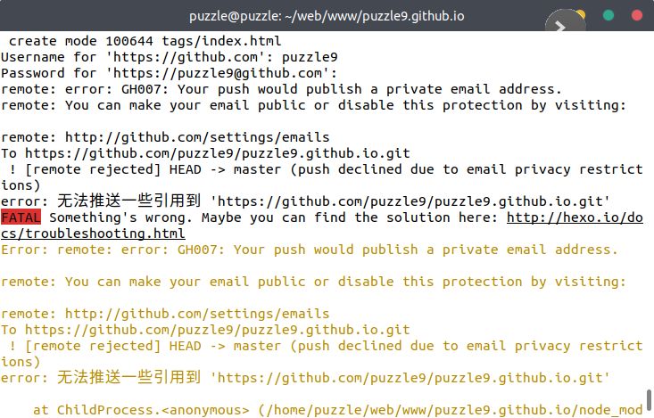
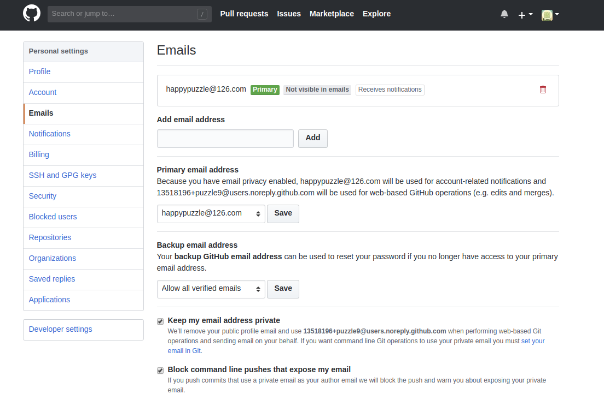
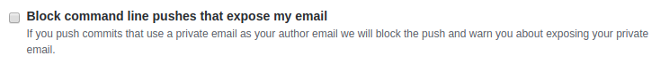

Github-Push-Email-Private
问题
使用 git 给 github 推送 时遇到

remote: error: GH007: Your push would publish a private email address.
remote: You can make your email public or disable this protection by visiting:
remote: http://github.com/settings/emails
解决方案
NO.1
取消勾选这个


Block command line pushes that expose my email
If you push commits that use a private email as your author email we will block the push and warn you about exposing your private email.
阻止命令行推送暴露我的电子邮件
如果您推送使用私人电子邮件的提交作为您的作者电子邮件，我们将阻止推送并警告您公开您的私人电子邮件。
NO.2
Keep my email address private
We’ll remove your public profile email and use 13518196+puzzle9@users.noreply.github.com when performing web-based Git operations and sending email on your behalf. If you want command line Git operations to use your private email you must set your email in Git.
将我的电子邮件地址保密
我们将删除您的公开个人资料电子邮件，并在执行基于Web的Git操作并代表您发送电子邮件时使用 13518196+puzzle9@users.noreply.github.com。如果您希望命令行Git操作使用您的私人电子邮件，您必须 在Git中设置您的电子邮件。
将此项目 email 设置成 推荐 email 一个帮助地址
git config user.email "13518196+puzzle9@users.noreply.github.com"
重置上次提交作者
git commit --amend --reset-author